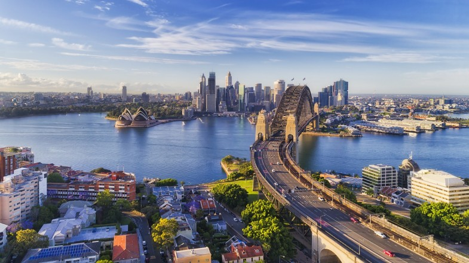
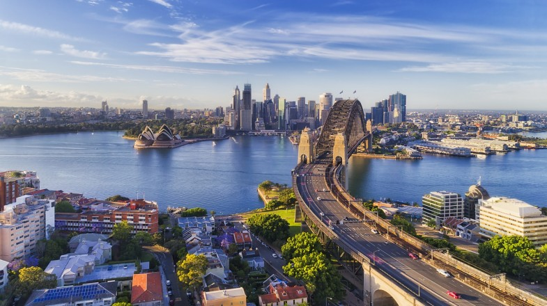

Let's travel together


Malta
It’s impossible not to love Malta. There’s year-round sun, more beautiful beaches than your little heart could ever desire, a vibrant nightlife and lots of opportunities for sports and adventure. The Mediterranean nation enjoys a whopping eight-month long summer, so there’s never a bad time to experience the island’s rustic charms. Malta has too many gorgeous beaches to mention. Whether you take a dip in the inviting waters of St Peter’s Pool or party with your friends on the golden sand of Ghajn Tuffieha- Malta’s islands have the perfect beach for you. Malta consists of three main islands. Sandwiched in between the two main islands of Malta and Gozo, lies the tiny island of Comino. The Maltese might enjoy the relaxed, Mediterranean way of life during the day, but don’t make the mistake of thinking Malta has a sleepy nightlife. The earliest signs of human habitation and culture on Malta date back more than 7,000 years – way older than the Egyptian pyramids and the Great Wall of China. It’s no wonder then that its charming streets make the island feel like a picturesque open-air museum. If you stay with a Maltese family, you won’t be a guest- you’ll be part of the family. The Maltese are some of the most welcoming people on the planet. The Maltese take great pride in their delicious cuisine with scrumptious fish dishes featuring heavily.


India
India is an enormous country, filled with incredible people and an amazing diversity of traditions, cuisines and religions. Every traveller who visits India quickly falls in love with the friendly locals, the ancient spirituality and of course, the traditional Indian food! From the vibrant festivals to the warm hospitality and the art of bargaining. The deeply devotional nature of Indian culture can be found everywhere, from the beautiful temples to the locals quoting the Gita. Just one trip to the market and you’ll be amazed by the art of Indian bargaining. Nearly everything is negotiable in India, from vegetables to clothes to taxi rides – and it’s always done with a smile. Indians have a fierce sense of love and protection for their family. You’ll see dozens of family members over generations living under a single roof, from children to great-grandparents. You’ll also get a wonderful insight into India’s legendary hospitality and generosity. It can all be summed up with their motto, the Sanskrit phrase “Atithi Devo Bhava” meaning “Guest is equivalent to God”.
 

Australia
As well as the beautiful beaches, Australia is also home to snowy mountains, incredible national parks, rainforests and desert. The landscape truly differs from state to state, which is why this country is so fun to explore. Australia's spectacular natural environment, multicultural communities, excellent food and wine, its weather and lifestyle and the friendliness and openness of its people make it one of the world's most attractive tourist destinations. Since Australia is isolated from all other continents, the wildlife is abundant and unique. You can find the loudest and brightest birds, dog-like dingos, the cutest fuzzy Koalas, and, of course, spiders on spiders on spiders. There are so many beaches in Australia that if you visited a new one every single day, it would take you 27 years to see them all! Fairy Bread, Sausage Rolls, Meat Pies, Vegemite, Tim Tams, Pavlova, Lamingtons, Golden Gaytimes, Weet-Bix, Goon, and Sausage Sizzles. Even just the names of Aussie foods make you smile! Unlike the lack of creativity for naming its large statueS, Australia does a fantastic job at naming places. Many have indigenous origins, while others just go along with Australia’s tendency to have weird names. With names like Wollongong, Mount Surprise, Little Ugly Creek, Bong Bong, Magnetic Island, Nowhere Else etc. The best part about these tours was not only the beautiful places I had the privilege of experiencing, but the abundance of backpackers looking for friendly conversations. On tours in Australia, even people traveling with a friend or significant other are open and excited to meet new people.
Foreign visitors mostly come to:
| Place name | Description | Info | Watch |
|---|---|---|---|
| Valletta |
Valletta is also a hub for contemporary artists. Within
the fortified building of St James Cavalier, you will find ‘Spazju
Kreattiv’, where exhibitions and events are held all year round.
Plus, you can see a play or watch a film in the state-of-the-art
independent cinema.
Do you and your other half share a love for art?
Head to the Valletta Contemporary museum to see their latest
exhibition or to the latest MUZA museum, also known as the Malta
National Community Art Museum.
For a romantic evening in Malta, attend a show at the majestic
Manoel Theatre, or enjoy an open-air performance at the
Royal Opera House.
|
Accommodation: From 70€ Price of beer: 2€ Average cost of dinner : 5€ Cost of activities: A boat trip starts from 8.50€ Tour Ticket Combos from 5.76 € |
|
| Sliema | Sliema is known for its beautiful quaint townhouses. Take a walk through Sliema’s urban streets and admire the beautifully structured houses. It is also popular for its Gothic churches and architectural buildings. It’s safe to say that if you have an eye for design, you’re going to fall in love with this town. Sliema is gifted with the best lunch spots on the island. There are a variety of coffee shops and brunch places where you can enjoy your lunch or afternoon tea. If you’re staying at AX The Palace, Talk of Town is your perfect spot for quick lunch while exploring the city. |
Accommodation: From 60€
Price of soju: 2.30€-3€
Average cost of dinner for two: 16€
Cost of activities:
Air Cruise Cable Car:10.62€
SEA LIFE 13.20€
|
|
| Jaipur | The history of Jaipur city dates back to the golden era where the Prince of Wales, came to Indi a on a tour. As the sweet colour pink, was considered symbolic to hospitality, the whole city was embraced in this beautiful shade, for the warm welcome of the Prince by the Great Maharaja Sawai Ram Singh of Jaipur. Thus, the Jaipur city is dripped in old traditional values, magnanimous monuments, contemporary arts and jewelry, Rajasthani food and art forms and much more, which can lure the hearts of a person who has a traveler spirit. |
Accommodation: From 70€ Price of turkish tea:0.14€ Average cost of dinner:6€ Cost of activities: Tour:7.20€ Aquarium:20.54€ |
|
| New Delhi |
Delhi is a melting pot of different cultures that is always
said to be home to big-hearted people. This multi-cultural
capital of India has always been a favorite choice of all Indians
for living here. The city has many opportunities of entertainment,
extensive options for weekend getaways, and a number of
interesting shopping sites. From deep-rooted history to wonderful
religious sites and from relishing food served at numerous locations
to grand celebrations of festivals, everything about Delhi is really
amusing and cool.
Explore in detail to know that why living in Delhi is so much fun.
|
Accommodation: From 60€ Price of coffee: 1€ Average cost of dinner for two: 11€ Cost of activities: Air Balloon: 143.89€ Red North Tour: 38.91€ |
|
| Sydney |
There's really something here for everyone, from music to
fashion, art, events, drinking and dining out, to nature
and exploring, it's really all at your doorstep. Sydney is so
diverse, and it's reflected in our restaurant and food scenes,
our art and culture and the variety of things on offer.
One of the most iconic Sydney experiences is soaking up
the sun at one of Sydney’s beautiful beaches.
And there are so MANY to choose from! Harbour beaches, surf
beaches, golden sand, white sand, busy, deserted, forest fringed,
Norfolk pine lined – no matter how you like your beaches
there will be one that fits you perfectly here.
|
Accommodation: From 150€
Price of flat white: 3.70€
Average cost of dinner: 13.97€
Cost of activities:
tour commbo: 41.08€
Big Sky Stargazing: 78€
|
|
| Melbourne |
It’s a multicultural city that is really inclusive.
So, when you walk around Melbourne, whether it’s in the suburbs
or the city, it’s a melting pot with different groups of people
and cultures and backgrounds. It’s welcoming to all cultures in
all aspects whether it be food, theatre, bar, art, fashion,
whatever it is. The Tulip festival is one of the best attractions.
It’s fun for all ages, including live entertainment concerts,
children’s games and activities.
|